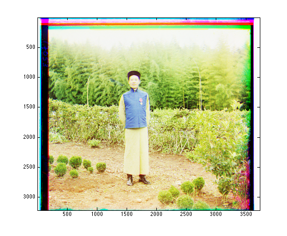
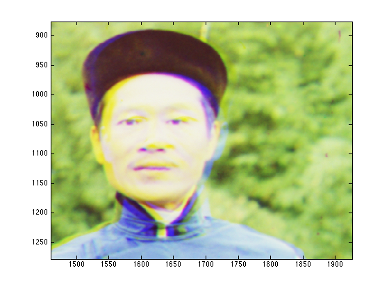
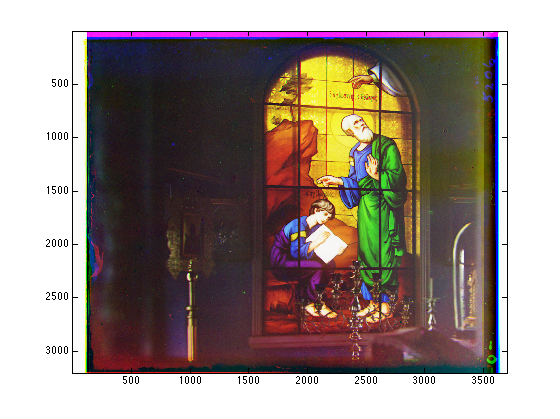
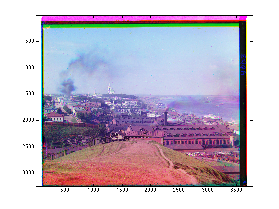

Figure 1: Input and output
Approach and Algorithmic Analysis
Pipeline:
1. Crop the margin of each input image (10% for each side)
2. Build the image pyramid for the three color channel images. (lowest resolution size should be less than (200*200))
3. Compute the misalignment of R to B, and of G to B.
3.1 Hierachically search from the lowest resolution level of the pyramid to the highest resolution level.
3.2 For each level, exhaustively search over a window of possible displacements. Initial window size is 16*16 and sucessive window sizes are all fixed to 8*8 to decrease the computation.
3.3 Use correlation as the measurement of matchness (higer correlation, better alignment).
4. Align orginal G and R to B based on the misalignment information, then combine them into a single RGB color image, then crop the border base on a default value (10%) to remove the border line.
Algorithmic Analysis
1. Using image pyramid and hierachical search to reduce the computation.
2. The error function is correlation, for two images, the higer correlation, the better alignment, so the optimal solution should be the position of maxmum correlation.
3. Time: For the provided input images (3200*3800*3), the program builds a five level image pyramid. The total time is around 16 seconds.
Experimental Analysis:
Basically the algorithm aligns the inputs well. For "00998u.tif" and "00451u.tif", the algorithm works nearly perfectly, but for "01520u.tif", the result is not good. The reason may be that there are so many edges (the background trees) in this image and thus, there are so many local minimals for the error function. And remember that we are using image pyramid and hierachical search, the true grobal minimum may be overwhelmed in low resulotion levels, which leads to the misalignment on the beginning and it is not able to be fixed by the hierachical search over following levels.
Below is some experimental results.

Figure 2: Output of "01520u.tif". (Left: full picture, Right: zooming in)
Figure 2: Output of "01520u.tif". (Left: full picture, Right: zooming in)

Figure 3: Output of "00998u.tif"
 Figure 3: Output of "00998u.tif"